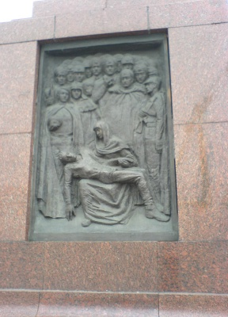
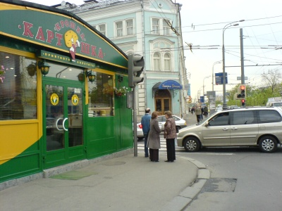
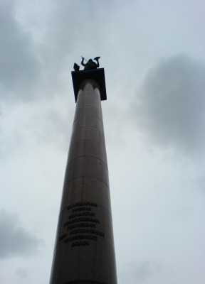

Игра №31
Тип игры: Закрытая
Описание: 1
Принадлежности: 1
Уровень 1.
Задание Полевое :
Весной по статистике происходит наибольшее количество самоубийств среди молодежи. Кто-то это делает из-за безответной любви, кто-то из-за неудачной сессии. СХватчики не относятся ни к одной ни ко второй категории. Мы с вами попросим агента «убить» нас и если получится, то вам дадут ключ. Выстрел должен быть уверенным, в голову. Агент будет припираться и его надо будет уговорить сделать вам выстрел в ЛИЦО. Агента можно найти на бульваре, недалеко от памятника великому русскому (совесткому) поэту, который по одной из версий, закончил жизнь самоубийством.

Уровень 2.
Задание Полевое :
На уровне будет два ключа:
Лето все ближе, девушки раздеваются не по дням, а по часам, тем самым увеличивая количество аварий. Поэтому вам необходимо быть осторожным на этом уровне и не отвлекаться. В данном районе ул. Чертановская вы сможете найти AUDI. Ключ будет её номер (включая номер региона). Ауди может, как стоять вдоль дороги в указанной области, так и двигаться на небольшой скорости.
Второй ключ вы найдете в месте (фото): на ближайшей табличке строительных работ от «Крошки картошки». Ключ - контактный телефон.



СХ + ключ 1 + СХ + ключ 2
Ауди А6, цвет темно синий. Машина грязная.
Уровень 3.
Задание Полевое :
Езжайте в район метро Коньково. Когда будете на месте, звоните 8 916 959 9739

Задание Координаторское :
Именно это «чувство» в этом «времени года» сыграло не одну роль.
Формат ответа : сх+имя+фамилия
Уровень 4.
Задание Полевое :
На уровне 2 ключа.
Первый ключ вы получите из листа, который полевые получили на предыдущем задании.
Проходит пора, наибольшего напряжения для нашей сердечной мышцы. Весной мы влюбляемся, мы бегаем и ходим на фитнес/в тренажерку, что бы подтянуть форму к пляжному сезону. Но многие ли из нас помнят человека, фамилия которого «произошла» именно от «нагружаемого» органа. На ограде, на которую смотрит его памятник вы легко сможете найти 2 черных таблички. Последнее слово на одной из них и есть второй ключ.
Формат ответа: первый ключ + сх + второй(слово из таблички)
Задание Координаторское :
Дороги и ворота; вход и выход; хаос – 1
(Имя1)
Очищение и праздник; чистота; свет; сияния – 2 (Имя2)
Война – 3 (Имя3)
? – 4 (Имя4=ключ)
Вам необходимо понять закономерность и угадать имя, связанное с 4-ой строчкой.
Фотрмат ответа: сх + имя.
Уровень 5.
Задание Полевое :
ВЙM/МЕИИРНЕДТМЙБНАТOСЕОКМААСИЕУТЫАМИSXСЛООФ*ТТЛ*АТ***CKТОВ*ИТЬЕЕВ.ЬБННO3АГ.СЮВ.,Ф***УЕТW2,О*Д*Е**ОКФРМОТ..*ВВЕИРКЗНООААБРRMГ*АЛ*СОВУНТСГХ:UPДИМАПКГО*ТОПЕО//3Е**ТРУДНУА*Е!Д/G**РНЬИЮАИККДЧ!ИWAОУАЕ*В**ТАТОА!МWMКЧЗОФЕДПЕЗАЛТ!ОWEОАВБОЗОО*АХЖА!*./ЛТЕХТТМДПН*НН!НC3О*ДООИ*ЪОНСАА!АX1*ГЧДГ*ШЕ*ОА**!
Идеальный квадрат ЦЕЗАРЯ
Все знаки препинания принимаются за отдельный знак
* принимать за пробел
Уровень 6.
Задание Полевое :
Езжайте по улице Заречье от улицы Совхозная. Как только вы пересечете линию высоковольтных передач, сверните налево и ищите место, где вы сможете использовать сапоги или даже наконец открыть сезон «купания».
Задание Координаторское :
Выучили азбуку Морзе? Точно? Проверим…
Формат ответа сх + два последних слова.
Уровень 7.
Задание Полевое :
Ключ находится на столбиках между «несуществующим материком» и шоссе. Название шоссе вы узнаете из названия города, которому совсем недавно (в конце весны) исполнилось 775 лет.
Задание Координаторское :
Этот тип рыб, который совершает миграцию море-река-море, можно поделить на 2 вида (расы):
1.Те которые зимуют в речке (т.е. мигрируют из моря в реку для "зимовки") прежде чем пойти на нерест, т.е. входят в реку весной, а нерестятся осенью.
2. Другие, которые успевают все это за весну и лето.
Формат ответа: сх + 1 вид + 2 вид.
Уровень 8.
Задание Полевое :
Ищите ключ на "ракушках" перед зданием, которое вы найдете по фотографиям. Ключ написан на гаражах с противоположной от здания стороны. (Не пугайте местных жителей).
Задание Координаторское :
Играйте.
Вам необходимо прислать на e-mail doom@cxmoscow.ru скриншот 11 уровня (проходить его не нужно) и сообщить об этом по тел. 741-89-26.
Уровень 9.
Задание Полевое :
Что бы поднять моральный дух промокшим сХватчикам, можете прочесть им следующее:
Все громче, громче солнышко стучится к нам в стекло,
Я радуюсь лучам его - в душе светлым-светло…
Ведь нежно улыбается, давно скользнувши в сны,
Любимая, красавица - принцесса фей весны.
А еще лучше попросите их спасти принцессу (найти ключ) из крепости, которая находится на улице, название содержит одну великую реку. Недалеко от этой улицы вы найдете еще несколько, связанных с другой рекой…
НАСТОЯЩИЙ ключ вам «поможет» найти Milla Jovovich.
Уровень 10.
Задание Полевое :
Жемчуговая алея.
Приезжайте туда. На месте позвоните по 8 916 959 9739 или 8 903 003 3325.
С собой иметь инстременты для снятия колеса на машине. (Домкрат и болонный ключ)
На этом уровне подсказок не будет.